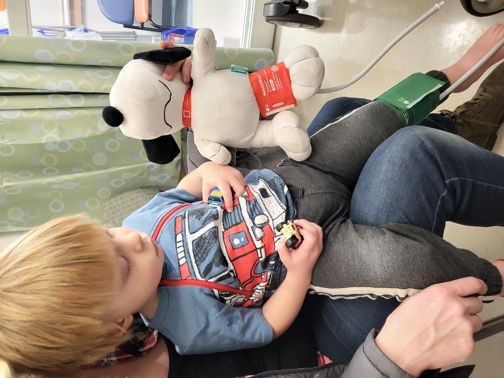

Eye
October 28, 2026
Micaiah and I sat down while they circled around us. Some of the men from our church met at our house to pray for Micaiah. We had met once after the initial diagnosis, but since it was a late night and Micaiah had already gone to bed, I was there alone to represent our family. This time we met at our house so we could pray over Micaiah directly. After anointing him, we took turns in prayer. We prayed for positive news for his upcoming eye exam (today, 10/28) and for him to handle the new intra-arterial treatment well. We got Micaiah his Snoopy stuffed animal and his therapy Hot Wheels while we were praying, and he was totally placated until near the end of our prayers. I don't remember who was praying or what was specifically being said at the time, but Micaiah's only interruption was to jerk his hand to his head and say, "eye."
When we had finished praying, I gave everyone a recap: One of the conditions the doctor told us would necessitate removing Micaiah's left eye (among others) was if it started to cause him pain. After that exam three months ago (7/22), Jerusha and I both started to notice him rubbing his eye more frequently. Following rule #1 (i.e. that we would not allow anticipatory grief to rob us of the present), we reminded ourselves that any number of things could cause him to rub his eyes and even to favor rubbing the left eye. We recognized that he was rubbing the left eye, but we took solace in the fact that he never seemed to get upset about it. At most, he would say "eye" when he rubbed. No crying, and no rhyme or reason to when he would do it. The next exam came, and we discovered that the it-would-take-a-miracle eye suddenly had a 60-70% chance of surviving. The tumors had reduced significantly, the swelling had gone down, and the retina had started the process of reattaching to the back of the eye.
Our fears turned to hope when he would rub his eye. "Maybe the miracle makes him want to rub," we thought. I'm not one who thinks everything is some sort of miraculous sign, but it was not lost on us that Micaiah noticed something about his eye while we were praying.

Micaiah and Snoopy are taking their vitals together
When the doctors were wrapping up with Micaiah's procedure, we were called into a conference room for a consult. Like every other time he had gotten an eye exam, we checked in with the front desk, and they assigned us a consult area. Most of the consult areas are basically constructed cubicles. There's not a ton of privacy, but it does a pretty good job of giving a family and their doctor some dedicated space to talk. Two of the consult areas, however, are private rooms. The only time we were assigned a private room was when we were first given the news of Micaiah's diagnosis. When they assigned us to a private room again today, Jerusha and I became apprehensive. Did the left eye get worse? Did we take a miracle for granted? What kind of bad news were we about to get?
Jerusha and I prayed one last time before the doctor came in. We've been explicit from the beginning that Micaiah's fate is in God's hands and that we will trust Him no matter the outcome. In an effort to bear our suffering righteously, we took to Job for guidance: "Shall we receive good from God and not receive evil?" (Job 2:10; NRSV). No, even if our hearts would break in two, we would be faithful to the One in whom we live and move and have our being. We prayed that God's will would be done, but that the news we were about to receive would become yet another opportunity for us to glorify Him.
The doctor walked in and sat down. He pulled his mask off, grinned, and gave us a thumbs-up, saying, "Everything is looking really good." The right eye still has some tumor activity, but it had reduced another 10% or so. He expects the intra-arterial treatment to start taking bigger chunks out of it again. The left eye has no tumor activity, meaning the masses are basically gone. There are still some tumor cells in the vitreous fluid, but there are no more tumors attached to the left retina. Furthermore, the swelling has gone, and the retina has reattached to the back wall of the eye!
It is not lost on us that our focused prayers have attended primarily to the left eye, and it has had a drastic turnaround, outpacing even the right eye. He still has severely reduced vision in his left eye, but it sounds like he will get to keep it, giving him some degree of eyesight (maybe depth perception, shadow vision, or peripheral vision) even if its standard vision is compromised. We continue to pray for the tumors in his right eye to shrink and die. Emboldened by the miraculous things we've seen so far, we also pray for the impossible: Complete restoration of vision and a correction of his genetics. Our God created Micaiah perfectly. That makes Him the ideal candidate to heal Micaiah as well.
We have an MRI on Friday (10/30) to check for any signs of spread. Then intra-arterial treatment begins the following week (11/6). Thank you all for your continued prayers. We can feel their impact, and—apparently—so can Micaiah.